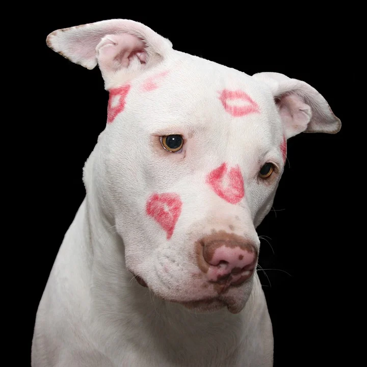
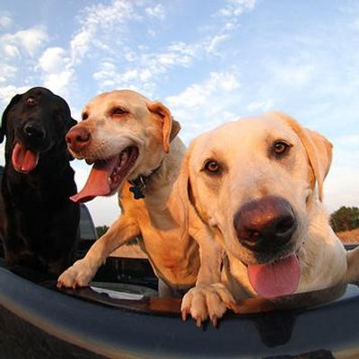
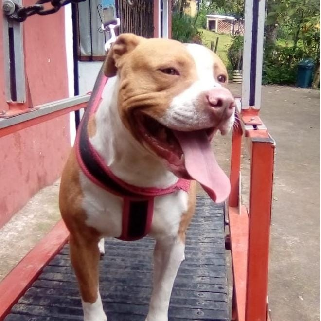
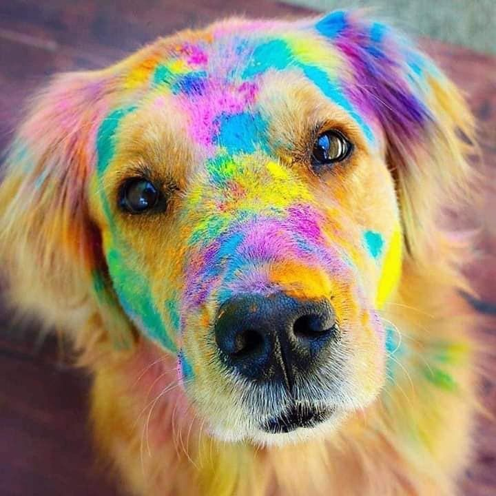

¡AYUDANDO A CAMBIAR LA VIDA DE MUCHOS PELUDOS!
Buscamos proteger la vida de perros y gatos en estado de maltrato y abandono. Les brindamos alimentos, medicamentos y albergue, con el fin de mejorar su calidad de vida y conseguirles un hogar.
QUIENES SOMOS
MISIÓN:
Los animales que llegan a la fundación reciben atención veterinaria completa, incluyendo esterilización, vacunación, desparacitación, identificación con microchip y cualquier tratamiento necesario para garantizar su bienestar hasta que logremos encontrarles un hogar que los cuide de por vida.
VISIÓN:
Promover la sensibilización colectiva fomentando la esterilización, el respeto a la vida, el NO al maltrato animal y la adopción responsable y soñamos con convertirnos en una organización líder en la protección y preservación de los animales que son víctimas del maltrato y la indiferencia.
TRABAJANDO EN PRO DE LOS ANIMALES:
Hemos cambiado su mundo y ellos el nuestro. Muchos han sido felizmente adoptados, otros nos han enseñado a no darnos por vencidos y son ejemplo de perseverancia y gratitud. Algunos ya no nos acompañan, pero nos queda la sensación de haberles permitido conocer la bondad humana. Y están los que habitan el refugio y que siguen esperando una oportunidad para tener una familia y llenar sus hogares de alegría y amor. Puede que no salvemos millones de animales de la calle que existen, pero ayudaremos a los que estén a nuestro alcance, a los que el universo nos coloque en el camino.
|  |  |
VISITANOS
Via Cachagüi-Pasto
Horario de visitas: 10:00AM a 4:00PM
Te invitamos todos los fines de semana a visitarnos y darle amor a nuestros peluditos. Ven a pasearlos, bañarlos y jugar con ellos.
En Fundación Oddys tenemos a muchos buscando un hogar ❤️
Promover la sensibilización colectiva fomentando la esterilización, el respeto a la vida, el NO al maltrato animal y la adopción responsable y soñamos con convertirnos en una organización líder en la protección y preservación de los animales que son víctimas del maltrato y la indiferencia.
|  |  |